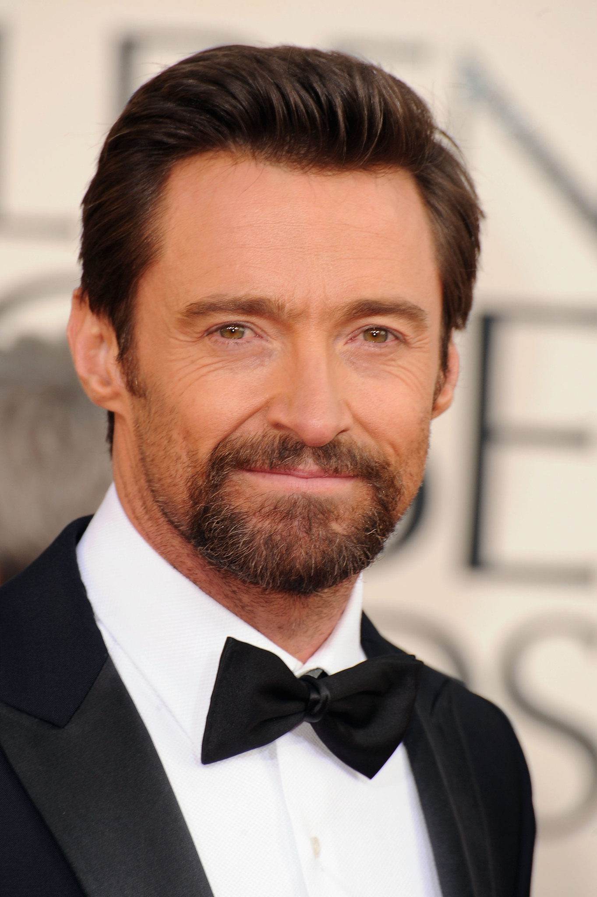

Reparto
Personajes principales
Actores

Hugh Jackman
Actor australiano muy conocido por papeles de acción y drama. En la película interpreta a Charlie Kenton, un ex boxeador que ahora pelea con robots y que, a lo largo de la historia, intenta reconectar con su hijo.
Dakota Goyo
Actor canadiense que comenzó desde chico en el cine. Interpreta a Max Kenton, el hijo de Charlie, quien aporta determinación y es clave para que el robot Atom llegue a competir a nivel profesional.
Evangeline Lilly
Actriz canadiense reconocida por su trabajo en cine y televisión. En la película es Bailey Tallet, amiga de la infancia de Charlie, que lo ayuda durante las peleas y funciona como apoyo emocional para él y su hijo.